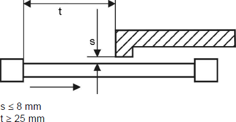
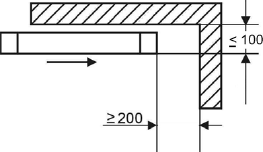
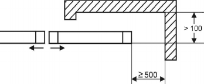
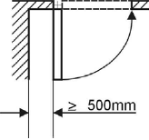
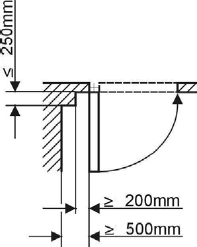

(1) Bei kraftbetätigten Türen und Toren muss eine wirksame Sicherung vor mechanischen Gefährdungen bis zu einer Höhe von 2,50 m über dem Fußboden oder einer anderen dauerhaften Zugangsebene vorhanden sein. Dies kann durch eine einzelne oder eine Kombination der folgenden Sicherungsmaßnahmen erreicht werden:
(2) Beim Betrieb von Türen und Toren darf der Nachlaufweg des Flügels nach Auslösen einer druckempfindlichen Schutzeinrichtung nicht größer sein als deren Verformungsweg. Bei Flügeln ohne Sicherheitseinrichtung an den Schließkanten darf der Nachlaufweg nicht größer als 50 mm sein, sofern mit dem Nachlauf eine gefährdende Flügelbewegung verbunden ist.
(3) Die erforderlichen Sicherheitsabstände müssen auch während der betrieblichen Nutzung dauerhaft eingehalten werden.
(4) Die Gefährdung, dass Beschäftigte beim Betrieb von vertikal bewegten Flügeln erfasst oder eingezogen werden, kann z. B. durch die Verwendung glattflächiger Flügel vermieden werden. Andernfalls, wie bei Rollgittern, sind weitere Sicherungsmaßnahmen (siehe Abs. 1) notwendig.
(5) Zusätzliche Sicherungen an Quetsch- und Scherstellen an Nebenschließkanten sind nicht erforderlich:
(6) Die Gefährdung, dass Finger eingezogen werden, besteht nicht, wenn die Flügel von automatischen Schiebetüren/-toren und festen Teilen ihrer Umgebung in einem Abstand s von 8 mm oder weniger aneinander vorbeilaufen (Abb. 1). Ein Abscheren oder Quetschen von Fingern wird verhindert, wenn der Abstand t zwischen Flügeln und Bauteilen 25 mm oder mehr beträgt (Abb. 1).

Abb. 1: Vermeiden von Einzugs- und Schergefährdung zum Schutz der Finger
(7) Damit zwischen den hinteren Kanten der Flügel (Nebenschließkanten) von kraftbetätigten Schiebetüren/-toren und festen Teilen der Umgebung beim Betrieb keine Quetschstellen entstehen, müssen genügend große Sicherheitsabstände verbleiben:

Abb. 2: Vermeiden von Quetschgefährdung zum Schutz des Kopfbereiches

Abb. 3: Vermeiden von Quetschgefährdung zum Schutz des Körpers
(8) Damit kraftbetätigte Dreh- und Faltflügeltüren oder -tore hinsichtlich Quetschstellen (zwischen dem Flügel und festen Teilen der Umgebung) sicher betrieben werden können, muss bei größtmöglicher Flügelöffnung der hinter dem Flügel gelegene Bereich über seine gesamte Tiefe eine lichte Weite von mindestens 500 mm aufweisen (Abb. 4). Abweichend hiervon genügt eine lichte Weite von mindestens 200 mm, wenn die Tiefe des vom geöffneten Flügel und festen Teilen seiner Umgebung gebildeten Bereichs höchstens 250 mm beträgt (Abb. 5). Können diese Werte nicht eingehalten werden, sind weitere Sicherheitsmaßnahmen (siehe Abs. 1) notwendig.

Abb. 4: Vermeiden von Quetschgefährdung zum Schutz des Körpers

Abb. 5: Vermeiden von Quetschgefährdung zum Schutz des Kopfbereiches
(9) Damit Flügel, die für die Handbetätigung angefasst werden müssen, weil zusätzliche Einrichtungen (z. B. Kurbeln oder Haspelkettenantriebe) nicht vorhanden sind, sicher verwendet werden können, müssen diese auf der inneren und äußeren Seite über Einrichtungen zur Handbetätigung verfügen, z. B. Klinken, Griffe, Griffmulden, Griffplatten. Wenn Türen und Tore nur von einer Seite betätigt werden sollen, braucht nur diese Seite mit solchen Einrichtungen ausgerüstet sein.
(10) Einrichtungen für die Handbetätigung, z. B. Kurbeln oder Ketten, von Türen und Toren müssen sicher verwendet werden können und müssen gegen Zurückschlagen, Abgleiten und unbeabsichtigtes Abziehen gesichert sein.
(11) Hat der Antrieb von kraftbetätigten Türen und Toren mechanische Rückwirkung auf den Handantrieb, müssen Hand- und Kraftantrieb gegeneinander verriegelt sein.